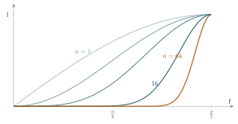

STEP II 1995，第 4 題
繼續之前，請先閱讀題目（原題為英文）。題目載於 STEP Support Programme 的題目資料庫： step.maths.org/questions/95-s2-q4
引子
\(\left(\frac12\right)!\) 是甚麼？這個問題聽來毫無道理：\(n!\) 的意思是 \(1 \times 2 \times \cdots \times n\)，而你不可能把「半個數那麼多」的項相乘。然而它確有一個自然的答案，就是 \[\left(\tfrac12\right)! = \frac{\sqrt\pi}{2}.\] \(\pi\) 從何而來？來自 \(\sin t\) 的冪的積分（integral），這正是本題研究的對象。過程中，本題證明了關於 \(\pi\) 的其中一條最古老、最奇特的公式，即沃利斯（John Wallis）在 1655 年提出的無窮乘積（infinite product） \[\frac\pi2 = \frac21 \cdot \frac23 \cdot \frac43 \cdot \frac45 \cdot \frac65 \cdot \frac67 \cdots,\] 並且找出 \(n!\) 的斯特靈公式（Stirling’s formula）中隱藏的常數，這條公式是每一位概率學家和統計學家都會用到的。
動筆之前
\(u_0\) 和 \(u_1\) 是甚麼？當 \(n\) 很大時，\(\sin^n t\) 在 \([0, \frac\pi2]\) 上的圖像大致是甚麼樣子？
\(u_0 = \int_0^{\pi/2} 1\,\mathrm{d}t = \frac\pi2\)，而 \(u_1 = \int_0^{\pi/2}\sin t\,\mathrm{d}t = 1\)。當 \(n\) 很大時，\(\sin^n t\) 極小，只有在 \(t = \frac\pi2\) 附近例外，因為那裏 \(\sin t\) 接近 \(1\)：圖像變成緊貼右邊界的一個狹窄尖峯（圖 4.4.1）。所以 \(u_n\) 隨 \(n\) 增大而縮小。本題準確地找出它縮小得有多快：與 \(\sqrt{\pi/(2n)}\) 相若。
逐步解題
階段 1 一條遞推公式
用分部積分法（integration by parts）計算 \(\int \sin t \cdot \sin^{n-1}t\,\mathrm{d}t\)：對 \(\sin t\) 積分，對 \(\sin^{n-1}t\) 求導。新的被積函數（integrand）含有 \(\cos^2 t\)；怎樣才能變回 \(\sin t\) 的冪？
取 \(\mathrm{d}v = \sin t\,\mathrm{d}t\)（故 \(v = -\cos t\)）及 \(w = \sin^{n-1}t\)（故 \(w' = (n-1)\sin^{n-2}t\cos t\)）， \[u_n = \Bigl[-\cos t\sin^{n-1}t\Bigr]_0^{\pi/2} + (n-1)\int_0^{\pi/2}\sin^{n-2}t\cos^2 t\,\mathrm{d}t.\] 當 \(n \geq 2\) 時，邊界項為零。寫成 \(\cos^2 t = 1 - \sin^2 t\)，該積分便是 \(u_{n-2} - u_n\)，所以 \(u_n = (n-1)(u_{n-2} - u_n)\)，即 \[nu_n = (n-1)u_{n-2}. \qed\] 兩邊同乘以 \(u_{n-1}\)，得 \(nu_nu_{n-1} = (n-1)u_{n-1}u_{n-2}\)。■
階段 2 一個不變量
這個關係式說明，當 \(n\) 減一時，\(nu_nu_{n-1}\) 這個量保持不變。它在 \(n = 1\) 時等於甚麼？
反覆運用，\(nu_nu_{n-1} = (n-1)u_{n-1}u_{n-2} = \cdots = 1 \cdot u_1u_0 = 1 \cdot 1 \cdot \frac\pi2\)。所以對所有 \(n \geq 1\)，\(nu_nu_{n-1} = \frac12\pi\)。■
階段 3 夾逼
對於 \(0 < t < \frac\pi2\)，我們有 \(0 < \sin t < 1\)，所以 \(\sin^n t < \sin^{n-1}t\)：除端點外，\(\sin^n t\) 的圖像位於 \(\sin^{n-1}t\) 的圖像之下。積分後得 \(0 < u_n < u_{n-1}\)。
利用 \(u_n < u_{n-1}\) 和 \(nu_nu_{n-1} = \frac12\pi\) 把 \(nu_n^2\) 夾住。
把 \(u_{n-1}\) 換成較小的 \(u_n\)，得 \(nu_n^2 < nu_nu_{n-1} = \frac12\pi\)。把 \(u_n\) 換成較大的 \(u_{n-1}\)，得 \(\frac12\pi = nu_nu_{n-1} < nu_{n-1}^2\)。所以 \(nu_n^2 < \frac12\pi < nu_{n-1}^2\)。■
在右邊的不等式中以 \(n + 1\) 代替 \(n\)：\(\frac12\pi < (n+1)u_n^2\)，所以 \(nu_n^2 > \frac{n}{n+1}\cdot\frac12\pi\)。合起來， \[\left(\frac{n}{n+1}\right)\tfrac12\pi < nu_n^2 < \tfrac12\pi. \qed\] 由於 \(\frac{n}{n+1} \to 1\)，由夾逼可得 \(nu_n^2 \to \frac12\pi\)。■

回顧
遞推公式（reduction formulae）。分部積分法把 \(u_n\) 化為 \(u_{n-2}\)，所以所有 \(u_n\) 都由 \(u_0\) 和 \(u_1\) 決定。
尋找不變量（invariant）。乘積 \(nu_nu_{n-1}\) 保持不變，正如 第 2.6 節 中的積分在 AGM 步驟下保持不變一樣。
單調性（monotonicity）加上不變量，便得出夾逼（squeeze）。知道 \(u_n < u_{n-1}\) 以及 \(nu_nu_{n-1}\) 的準確值，便把 \(nu_n^2\) 夾在兩個極限相同的量之間。
背後的數學
把遞推公式一直用到 \(u_0\) 或 \(u_1\)，便得到明確的值： \[u_{2m} = \frac{1 \cdot 3 \cdot 5 \cdots (2m-1)}{2 \cdot 4 \cdot 6 \cdots 2m}\cdot\frac\pi2, \qquad u_{2m+1} = \frac{2 \cdot 4 \cdot 6 \cdots 2m}{3 \cdot 5 \cdot 7 \cdots (2m+1)}.\] 由夾逼可知 \(u_{2m}/u_{2m+1} \to 1\)。把這個比寫出來再整理，便得到沃利斯乘積 \[\frac\pi2 = \lim_{m \to \infty} \frac{2 \cdot 2}{1 \cdot 3}\cdot\frac{4 \cdot 4}{3 \cdot 5}\cdots\frac{2m \cdot 2m}{(2m-1)(2m+1)}.\] 沃利斯在 1655 年以一種大膽的插值（interpolation）方法發現了它：他把 \(\int_0^1 (1 - x^2)^{1/2}\,\mathrm{d}x\) 放進一個指數為整數的積分表中，從而猜出它「應該」是甚麼。這是數學史上最早的無窮乘積之一，僅次於韋達（Viète）的乘積（第 2.5 節），也是第一個只用有理數的無窮乘積。
二分之一的階乘
沃利斯的插值想法，在 1729 年由歐拉（Euler）賦予了嚴格的意義。他找到一個函數，現稱為伽瑪函數（Gamma function）， \[\Gamma(s) = \int_0^\infty t^{s-1}e^{-t}\,\mathrm{d}t,\] 它滿足 \(\Gamma(s + 1) = s\,\Gamma(s)\)（用分部積分法），而且對整數 \(n\) 有 \(\Gamma(n + 1) = n!\)。它把階乘（factorial）平滑地延拓至所有正實數。與它密切相關的貝塔函數（Beta function） \[\mathrm{B}(p, q) = \int_0^1 x^{p-1}(1-x)^{q-1}\,\mathrm{d}x = \frac{\Gamma(p)\Gamma(q)}{\Gamma(p+q)}\] 包含了 第 4.3 節 和 第 2.9 節 中的積分，而且經代換 \(x = \sin^2 t\) 之後，也包含我們的 \(u_n\)。特別地，\(\int_0^1 x^{1/2}(1-x)^{1/2}\,\mathrm{d}x = \frac\pi8\)（練習 2），由此得 \(\Gamma(\frac32)^2/\Gamma(3) = \frac\pi8\)，即 \(\left(\frac12\right)! = \Gamma(\frac32) = \frac{\sqrt\pi}{2}\)。等價地，\(\Gamma(\frac12) = \sqrt\pi\)，這與著名的高斯積分（Gaussian integral）\(\int_{-\infty}^\infty e^{-x^2}\,\mathrm{d}x = \sqrt\pi\) 是同一個事實，也正是 \(\pi\) 出現在正態分佈（normal distribution）公式中的原因。
斯特靈公式
斯特靈公式說 \(n! \approx \sqrt{2\pi n}\,(n/e)^n\)。其中 \((n/e)^n\) 的部分相對容易得到，但常數 \(\sqrt{2\pi}\) 則較難，而求出它的標準方法正是本題：\(u_{2m}\) 的明確值涉及 \((2m)!/(m!)^2\)，而極限 \(nu_n^2 \to \frac\pi2\) 則把這個常數確定下來。另有一條截然不同的途徑，通過概率得到同一個常數，見 第 12.23 節。
思維技巧
分部積分法往往把帶有參數 \(n\) 的積分，與參數較小的同一類積分聯繫起來。這個遞推關係（recurrence）隨後可以解出，或用來分析 \(n \to \infty\) 時的表現。
留意遞推關係下保持不變的量，以及對 \(n\) 的單調性；兩者結合，往往不需要任何明確公式便能求出極限。
延伸練習
沃利斯乘積。利用 \(u_{2m}\) 和 \(u_{2m+1}\) 的明確值，以及 \(u_{2m+1} < u_{2m} < u_{2m-1}\)，證明沃利斯乘積。
一個貝塔積分。試做 STEP II 2013，第 2 題。這題用遞推公式計算 \(\int_0^1 x^n(1-x)^n\,\mathrm{d}x\)，然後問當 \(n = \frac12\) 時答案有何啟示：這是對二分之一的階乘的初次一瞥。
貝塔函數。試做 STEP III 2025，第 1 題 （載於 OCR 提供下載的 2025 年試卷 zip 檔案內）。這題建立一般的貝塔積分 \(\int_0^1 x^{p-1}(1-x)^{q-1}\,\mathrm{d}x\)、它的對稱性和一個遞推關係，並用它們計算一個在 \([0, \infty)\) 上的積分。
中心二項式係數（central binomial coefficients）。 較難 證明 \(u_{2m} = \binom{2m}{m}\dfrac{\pi}{2^{2m+1}}\)，並利用 \(nu_n^2 \to \frac\pi2\) 推導出當 \(m\) 很大時 \(\binom{2m}{m} \approx \dfrac{4^m}{\sqrt{\pi m}}\)。就 \(m = 10\) 驗證這個結果。
延伸閱讀
Julian Havil, Gamma（Princeton University Press）。內容包括伽瑪函數及其歷史。
Philip J. Davis, “Leonhard Euler’s integral: a historical profile of the Gamma function”, American Mathematical Monthly 66 (1959)。一篇獲獎的經典文章，讀過本節之後便能看懂。
Emil Artin, The Gamma Function（Dover）。一本簡短而優美的專著，適合學過一些分析之後閱讀。